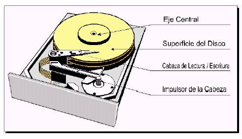

8.- Disco Duro
Introducción.
Los discos duros son en la actualidad los dispositivos de almacenamiento masivo por excelencia en los PCs, hasta el punto en que se han convertido en un componente casi indispensable. Sin los discos duros y la evolución que estos han tenido tanto en velocidad como en capacidad, probablemente hoy no podríamos encender nuestro equipo y en unos segundos tener listos para trabajar nuestros programas y sistemas operativos preferidos. Desde los primeros discos duros, de capacidades de 10 o incluso 20 Megabytes, hemos llegado superar más de 10.00 veces al primer Winchester. El que hoy sea habitual que un equipo domestico cuente con discos duros de 40 u 80 Gigabytes ha condicionado en gran medida la evolución del software y las aplicaciones a las que se dedican los PCs. Hace 15 años estábamos orgullosos de poder arrancar nuestro PC desde un disquete de 5¼, obtener la interfaz de texto de MS-DOS 3.0 y escribir una carta en texto plano sobre una pantalla negra. Y todo ello en un ordenador que posiblemente no contaba con un disco duro. Hoy tenemos sistemas operativos mucho más complejos, interfaces gráficas que hacen accesibles los PCs a usuarios con menos experiencia, programas capaces de interactuar con el usuario para conseguir que realice su trabajo o simplemente entretenerle... todo esto se apoya directamente sobre la gran capacidad que ofrecen los discos actuales.
Concepto.
Un disco duro es un dispositivo de almacenamiento no volátil, que conserva la información aun con la pérdida de energía, que emplea un sistema de grabación magnética digital; es donde en la mayoría de los casos se encuentra almacenado el sistema operativo de la computadora. Dentro de la carcasa hay una serie de platos metálicos apilados girando a gran velocidad. Sobre los platos se sitúan los cabezales encargados de leer o escribir los impulsos magnéticos. Hay distintos estándares para comunicar un disco duro con la computadora; los interfaces más comunes son Integrated Drive Electronics (IDE, también llamado ATA) , SCSI generalmente usado en servidores, SATA, este último estandarizado en el año 2004 y FC exclusivo para servidores.
Historia.
La leyenda del disco duro parece remontarse a 1952, año en el que IBM crea en San José (California) el primer laboratorio dedicado exclusivamente a la investigación y desarrollo de dispositivos de almacenamiento. A la cabeza de este proyecto se encontraba Reynold Johnson, ingeniero de la conocida marca que ya destacaba en la invención de dispositivos mecánicos y electromagnéticos (inventor de los primeros correctores automáticos de exámenes). La idea de un dispositivo magnético de almacenamiento consistente en una superficie giratoria y una cabeza que pudiera leer y escribir impulsos magnéticos sobre ella comenzaba aquí. Aproximadamente dos años después Johnson completaba este proyecto, que originalmente (y como casi todo en la informática hace unos años) sólo beneficiaria a los militares estadounidenses. El RAMAC (“Random Access Method of Accounting and Control”) fue el primer disco duro de la historia de la informática. Contaba con 50 platos de 24 pulgadas de diámetro que giraban a una velocidad de 1200 rpm, un tiempo de acceso medio de 1 segundo y la entonces increíble capacidad de 5 megabytes. Gracias a este dispositivo y las mejoras que realizaría algunos años más tarde (el RAMAC-350), Johnson se haría merecedor de diversos premios. “International Historic Mechanical Engineering Landmark” en 1984, la “National Medal of Technology” en 1986 y el “Award for the Advancement of Information Storage Technology” en 1992. En 1973 aparece la tecnología de disco Winchester, cuyos 30 MB con 30 ms de tiempo medio de acceso consiguieron que sus creadores le dieran el nombre del conocido rifle. Desde entonces, la evolución del disco duro ha tendido hacia la miniaturización, el aumento de capacidad y la mayor velocidad. Y no sólo desde el punto de vista electromagnético. Hoy en día la aerodinámica e incluso la mecánica cuántica son claves en la fabricación de un disco.
La capacidad se ha visto aumentada a la vez que reducían el numero de platos que componían un único disco duro gracias a que en la actualidad, la tecnología de los discos nos permite almacenar mucha más información en menos superficie. De un disco de 171 MB con dos platos de 3,5 pulgadas que podía almacenar 38400 bits por pulgada, hemos pasado a discos de 60 GB que en el mismo número de platos del mismo tamaño llegan a almacenar mas de 540 MB por pulgada.
La velocidad también ha aumentado espectacularmente. Mientras que nuestro disco de 171 MB giraba a 3800 rpm, el de 60 GB gira a 7200 RPM y puede alcanzar velocidades de transferencia de hasta 100 MB/s.
Partes de un Disco Duro y su Funcionamiento.
En este apartado describiremos tanto las piezas principales de las que se compone un disco duro, como la estructura interna que permite el almacenamiento de datos de forma organizada.
Componentes físicos del disco duro
Al hablar de los componentes físicos de un disco, debemos mencionar el carácter mecánico de este. Pues se trata de uno de los pocos componentes de un PC que consta de partes mecánicas y no solas electrónicas.
Como idea general, podemos decir que los discos duros están formados por varios platos que giran sobre un eje central y por unas cabezas de lectura/escritura capaces de desplazarse sobre el disco, las cuales codifican la información a grabar en forma de impulsos magnéticos o descodifican estos impulsos previamente registrados en los platos para extraer nuestros archivos. Entre los componentes físicos, podemos distinguir cinco elementos principales en un disco duro:
Platos: Se trata de círculos (discos) metálicos, normalmente de aluminio, finamente pulidos y recubiertos de una delgada aleación metálica con propiedades magnéticas. Estos platos se encuentran instalados sobre un eje central. Con la evolución de los discos, el número de platos se ha ido reduciendo a 1 o 2 como máximo en los dispositivos actuales.
Eje / Motor: Realiza las funciones de soporte de los platos y unión de los mismos con un motor que los hace girar a velocidades angulares constantes de hasta 10.000 e incluso 15.000 revoluciones por minuto en los discos duros SCSI mas modernos.
Cabezas: Son las encargadas de la lectura y escritura de datos sobre la superficie del disco. Están situadas en el extremo de pequeños brazos que se encuentran por encima y por debajo de cada plato del disco duro. Las cabezas son uno de los componentes más delicados del disco, ya que se encuentran planeando a distancias aproximadas de 0,0003 mm sobre los platos; de ahí que cualquier golpe pueda acabar con la vida de nuestro disco. Normalmente los discos duros cuentan con dos cabezas por plato que se desplazan a la vez por medio de un único actuador o resorte, pero en discos de gama alta podrían encontrarse cuatro cabezas, de forma que a cada una le corresponde solo la mitad del radio del disco, consiguiendo así un menor tiempo de búsqueda.
Actuador / Impulsor: Es el sistema que mueve la estructura de las cabezas a lo ancho de la superficie de los platos. Su funcionamiento está basado en un electroimán que al recibir mayor o menor corriente consigue alinear con precisión las cabezas sobre la pista concreta que vaya a leerse o grabarse.
Circuitería / Controladora: Se encarga del control de la unidad, y está situada en la parte inferior de la carcasa de un disco. Su misión principal es la conversión de las señales digitales conque trabaja el ordenador, a los impulsos eléctricos capaces de ser almacenados por el disco.

Estructura Física / Lógica.
La estructura física de la superficie de un disco duro es variable según las marcas y modelos. Sólo la propia controladora de la unidad sabe exactamente cual es la traducción que debe aplicar sobre los parámetros lógicos que se muestran al ordenador. Es decir, los parámetros físicos del disco (aquellos que utiliza internamente la controladora) rara vez coinciden con sus correspondientes lógicos (aquellos que el disco muestra al ordenador). Pero ya sea física o lógicamente, el disco está estructurado mediante un serie de divisiones de su superficie, mediante las cuales se consigue que los datos se almacenen en zonas concretas y que se conozca cual es la localización de los mismos para permitir ser leídos más tarde. Describimos a continuación cuales son las divisiones mediante las que se estructura la información del disco:
Cilindros y pistas: Los cilindros son cada una de las circunferencias concéntricas en que están divididas las superficies de todos los platos (es decir, un mismo cilindro comprende a todos las caras de todos los platos). El número de cilindros viene determinado por el número de posiciones distintas en que es capaz de detenerse la cabeza para realizar una lectura o escritura. El número de pistas es el resultado de multiplicar cilindros por caras.
Caras: son cada una de las dos superficies que ofrecen los platos que forman el disco.
Sectores: son las zonas en que se dividen las pistas. Usualmente cada sector permite almacenar 512 bytes de información (aunque su capacidad real es algo mayor, pero esta reservada a datos del propio disco
Funcionamiento.
Para describir el funcionamiento de un disco duro y la influencia de cada una de las partes comentadas, vamos a repasar un proceso completo de lectura o escritura. Esto permitirá conocer en más detalle cual es el papel concreto de cada componente y como mediante la estructuración de la información podemos acceder directamente a cualquiera de los sectores del disco (a diferencia de los dispositivos de acceso secuencial):
El ordenador (por mandato del Sistema Operativo) indica a la controladora del disco que realice una determinada operación de lectura o escritura. La controladora procesa la información. Lo primero que debe hacer es enviar al actuador la corriente exacta para desplazar las cabezas a la pista en la que vaya a realizarse la lectura o escritura. Tras esto, esperará hasta que el sector que se desea leer o escribir, pase por debajo de la cabeza, gracias al giro a velocidad constante de los platos del disco.
La cabeza lee el sector detectando la polaridad de las partículas magnéticas de la superficie del disco, o lo escribe realineando dichas partículas. Una vez concluida la lectura, los datos son enviados a la controladora y devueltos al ordenador. En el caso de la escritura, la controladora devuelve una confirmación indicando que el proceso se realizó correctamente.
|